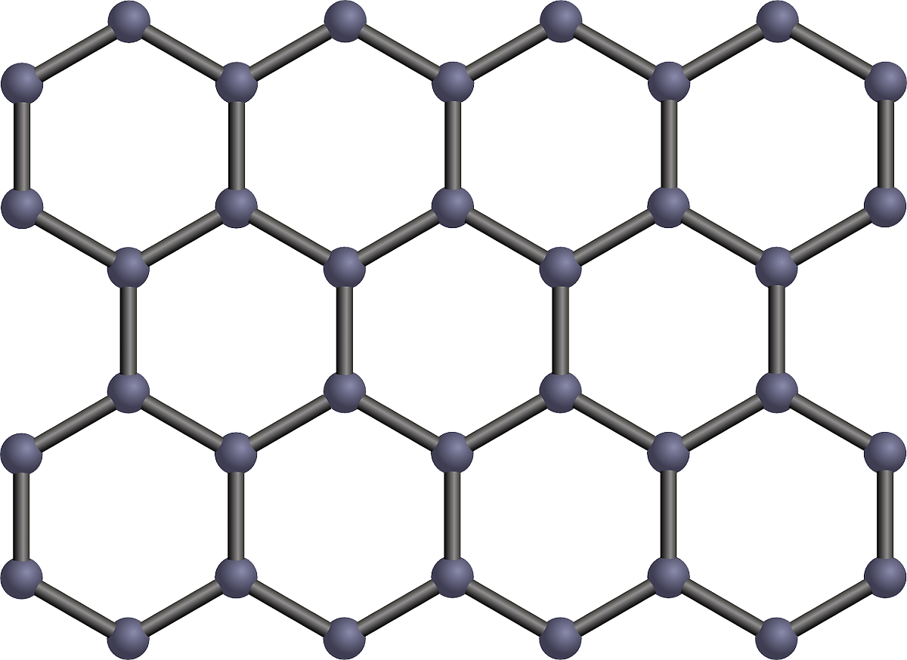

*특징 - 대기와 빠르게 반응하고, 물과 격렬히 반응한다.
*특징 - 다른 원소들과의 반응성이 크다.
*원소 주기율표에서 금속원소는 왼쪽, 중간 부분에 있고, 비금속 워소는 거의 오른쪽에 위치해 있다.
전자껍질
- 전자는 항상 전자껍질 위에 있다.
- 가장 안쪽 전자껍질부터 바깥쪽 전자껍질에 k부터 알파벳 순서로 이름붙임(1⇒k⇒주양자수가 1이다, 2⇒l⇒주양자수가 2이다, 3⇒m⇒주양자수가 3이다)
- 원자껍질에 들어갈 수 있는 최대 전자 수 = 2주양자수^2
-최외각 전자가 8개이면 안정적인 상태임
-원자가 전자가 4개보다 적은 경우에는 전자를 잃음
-원자가 전자가 4개보다 많은 경우에는 전자를 얻음
-원자가 전자가 4개인 경우에는 공유결합을 통해 안정된 상태를 유지
- K(원자번호 19) - k(2), l(8), m(8), n(1)
- Ca(원자번호 20) - k(2), l(8), m(8), n(1)
규칙을 벗어남
신소재
물질 - 전기적 성질- 도체 - 전기가 잘 통함(전기저항이 적음)ex)왠만한 금속
- 절연체 - 전기가 잘 통하지 않음(전기저항이 큼) ex)고무, 플라스틱
- 반도체 - 조건에 따라 전기저항이 바뀜 ex)규소, 저마늄
- 액정 - 가늘고 긴 분자가 규칙적으로 배열⇒고체의 성질을 가지고 있으면서도 액체처럼 흐르는 성질또한 있다.
- 액정 디스플레이(lcd) - 전압을 통해 빛을 투과시키거나 투과시키지 않을 수 있다.
| 다이오드 | 전류를 한쪽 방햫으로 흐르게 함(교류를 직류로 바꾸는 정류작용을 함) |
|---|---|
| 트렌지스터 | 약한 신호를 크게 증폭시키거나, 신호가 0과 1로 구성된 디지털 회로 제작에 이용(전류를 껐다 켰다가 가능) |
| 발광 다이오드 | 전류가 흐르면 빛을 방출 |
| 유기 발광 다이오드 | 자체에서 빛을 방출, 휘어지는 디스플레이로 개발 가능 |
- 강자성체 - 외부 자기장을 제거해도 자석의 성질 유지 ex)철, 금
- 상자성체 - 외부 자기장을 제거하면 자석의 성질 x ex)고무, 알루미늄
- 반자성체 - 외부 자기장을 밀어냄 ex)초전도체 자기적 성딜을 이용한 신소재
- 초전도체 - 초전도 현상이 나타나는 물체
- 초전도 현상 - 일정온도 이하에서 전기저항이 0이 됨
- 임계온도 - 초전도 현상이 나타나는 온도(전기저항이 0이 되는 온도)
- 외부 자기장을 밀어냄(반자성체의 성질)
- 일정온도 이하에서 전기저항이 0이 됨(초전도 현상)
*고출력 소형 스피커
그 외 신소재
*그래핀 - 특징 : 단단하고 잘 휘어짐, 열과 전기 전도성이 높음 
*탄소 나노 튜브 - 특징 : 단단하고 열과 전기 전도성이 높음

지구단원 생물단원